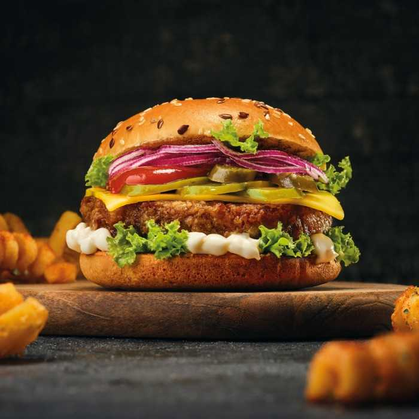

Burger vegan: Rețetă cu ciuperci și fasole roșie
bucătar chef - Băjenaru Erik,
București 2024
Ciupercile au o textură asemănătoare cu a cărnii și sunt și foarte hrănitoare, de aceea pot fi utilizate într-o rețetă de burger vegan, iar fasolea vine cu un aport bun de fibre și proteine.

Ingrediente pentru 5 porții
- 1 cană de ciuperci pleurotus, mărunțite
- 1 conservă de fasole boabe roșie
- 1 ceapă mică, mărunțită
- 3 cepe verzi, mărunțite
- 1 cățel de usturoi pisat
- 2 linguri de pătrunjel tocat
- ½ linguriță de chimen
- 1 lingură de ulei
- sare și piper, după gust
Pentru asamblare:
- 5 chifle din faină integrală
- Foi de salată verde, spălate și uscate
- Felii de roșii
- Castraveți murați feliați
- Sos de usturoi sau maioneză vegană
- Sos de roșii preparat în casă ori ketchup
Mod de preparare
- Sotează ceapa și usturoiul în ulei timp de 3-5 minute (până când ceapa se înmoaie), amestecând continuu. Adaugă apoi ceapa verde, chimenul și ciupercile mărunțite și mai ține pe foc până când dispare apa lăsată de ciuperci. Scoate acest amestec într-un bol.
- Preîncălzește cuptorul la 200 de grade Celsius.
- Pune apoi boabele de fasole din conservă în blender ca să se transforme într-o pastă mai groasă. Amestecă această pastă cu ciupercile trase la tigaie anterior și adaugă pătrunjelul tocat, sarea și piperul. Modelează cu mâinile acest amestec, astfel încât să obții 5 chifteluțe pentru burger.
- Unge o tigaie cu o lingură de ulei și pune burgerii, lasă-i să se gătească pe o parte câteva minute, apoi întoarce-i și pe cealaltă parte și, dacă mai e nevoie de ulei, mai unge-i cu o pensulă. Când s-au gătit, scoate-i pe o farfurie. Burgerii vegani pot fi copți și la cuptor, într-o tavă tapetată cu hârtie de copt, însă vor ieși un pic mai uscați.
- Montează apoi burgerul în chifla tăiată pe jumătate. Unge o jumătate cu sos de usturoi sau maioneză, iar cealaltă cu sos de roșii preparat în casă ori cu ketchup. Pune burgerul pe una dintre jumătăți, apoi feliile feliile de roșii și cele de castraveți murați și o frunză-două de salată verde, apoi închide burgerul cu cealaltă jumătate de chiflă și e gata de consum. Opțional, mai poți pune și o felie-două de brânză vegană - există unele sortimente care se și topesc ușor la căldură și seamănă cu brânza Cheddar.